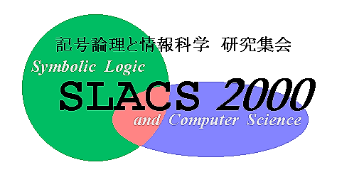

第１７回記号論理学と情報科学 研究集会（ＳＬＡＣＳ）
日程：２０００年９月２７日（水）午後２時〜２９日（金）正午
会場：京都大学 数学教室 大会議室 [吉田地区・北部キャンパス]
幹事：亀山幸義 （京都大学 情報学研究科）
第１７回集会は
６８名という多くの方々の出席を得て無事終了しました．
講演された方，参加された方，手伝ってくれた方すべてに
深く感謝します．
出席者数が予想以上だったため，
高橋先生のチュートリアルの際は席が不足して
ご迷惑をおかけしました．
また，懇親会には３５名の方々の参加を得て大いに盛り上がり
ました．剰余金は来年度に繰り越しました．
次回（第１８回）の集会は，
２００１年秋頃に，東京大学 長谷川立氏を
幹事として開催する予定です．
- 第１７回 集会の参加募集
- プログラム（日本語），
プログラム（英語），
講演アブストラクト
- チュートリアル: 高橋正子先生（国際基督教大学）
「証明と型」
- 会場は，吉田キャンパス・北部地区にある数学教室です．
地図 [New!],
言葉による説明．
- 京都 宿泊情報は
こちらです．
- 懇親会: ９月２８日（木）の晩に会場の近くの
飲み屋で行います．
会費は一般4500円〜5000円程度, 学生 3000円程度の予定です．
出席人数を早目に連絡する必要がありますので，お手数ですが，
懇親会へ出席する方（出席する可能性の高い方）は，
9月 23日 (土) までに
幹事 宛にメイルをお送りください．
出席するかどうかわからない方も，
出席できそうな可能性を，たとえば「50%である」のように書いて送ってください．
SLACS ホーム
SLACS2000幹事:
亀山幸義